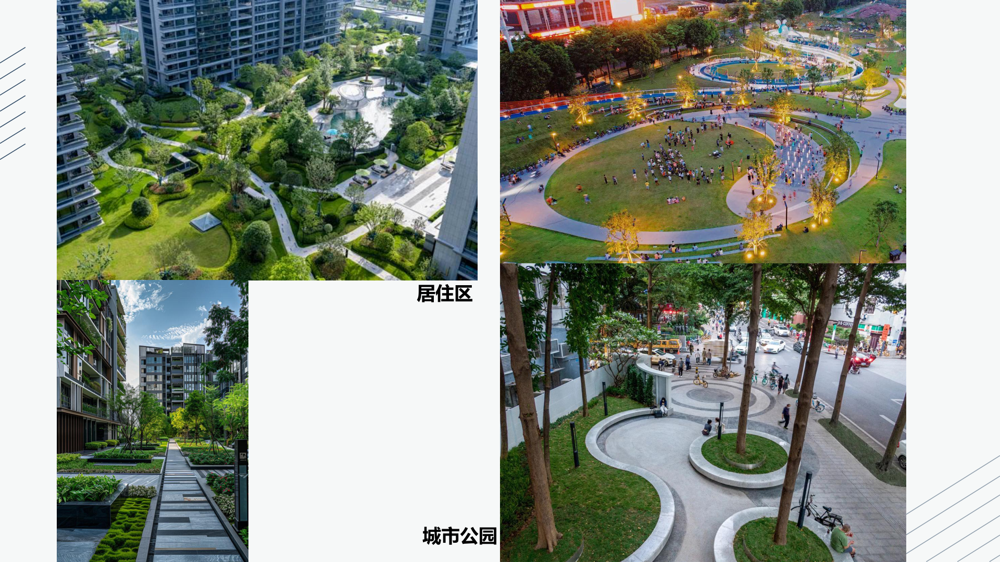
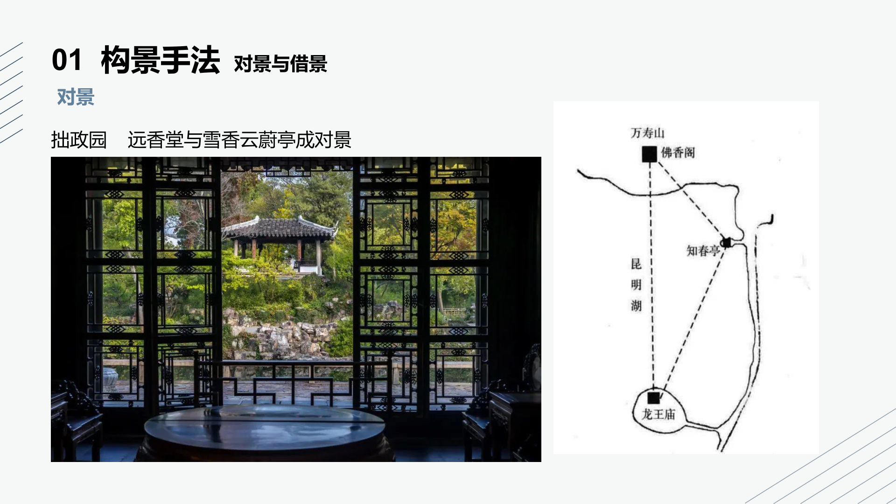
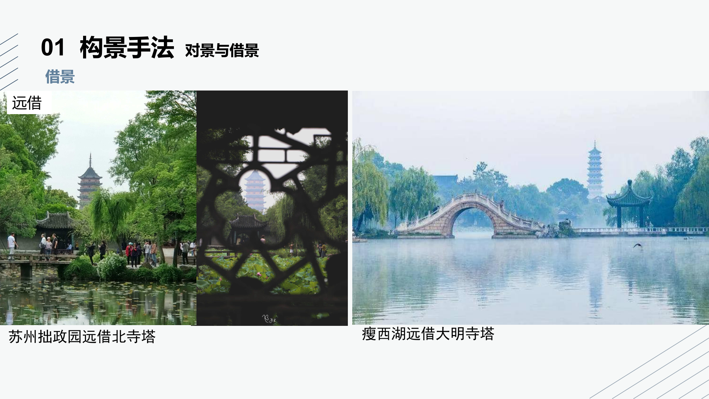
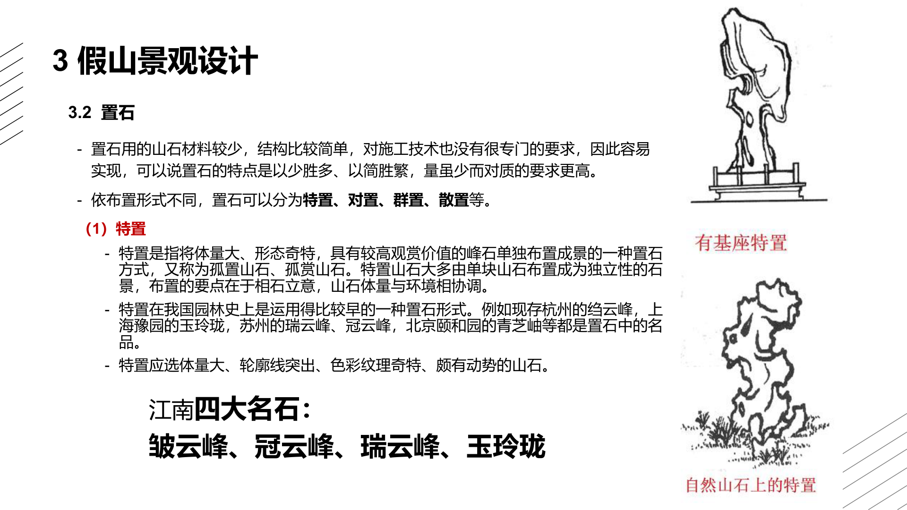
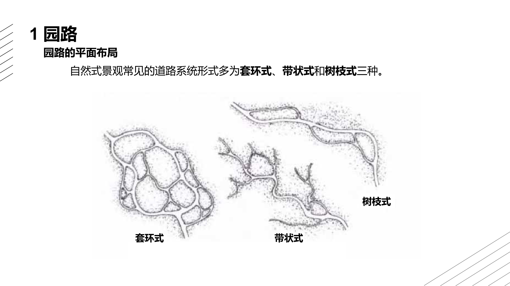
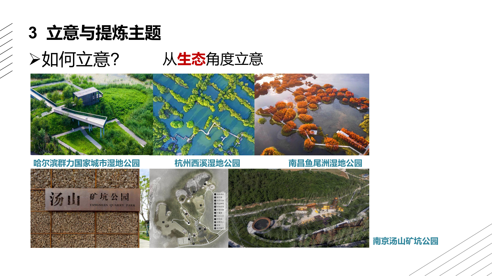

《旅游景观设计》
课程笔记全面版
━━━━━━━━━━━━━━━━━━━━━━━━━━━━━━━━━━━━━━━━
Tourism Landscape Architecture
—— 基于课程课件系统整理 ——
目 录
第一章 绪论
1.1 旅游景观规划设计概念
1.1.1 景观的概念
"景"是指客观存在的风景与景物，是观察者能够感受到美的存在，能够影响或调节人类精神状态，能够协调人类与自然生态平衡的景物。"观"即观察、观赏。"景观"（landscape）即大地景象。
景观在不同学科中有不同含义：
学科 | 景观的含义 |
艺术学 | 最初的含义，等同于风景 |
地理学 | 区域地表的自然现象及其动态变化的综合体 |
地质学 | 具有相同地质基础的地域 |
建筑学 | 作为建筑物的配景或背景 |
生态学 | 生态系统或生态系统的子系统 |
旅游学 | 一定区域的整体外貌，视其为旅游资源 |
1.1.2 旅游景观的概念
旅游景观（Tourism Landscape）是指在旅游活动过程中，为满足游客的观赏、体验、休闲和文化需求，以自然景观、人文景观及其组合形态为核心，经过规划设计而形成的空间环境。旅游景观不仅包括自然环境的原生景观，还包含人类社会发展过程中形成的文化景观，并强调生态性、功能性和美学价值。
1.1.3 旅游景观的分类
参照《旅游资源分类、调查与评价》（GB/T 18972-2017）中的分类体系，旅游景观分为8个主类、23个亚类、110个基本类型：
主类 | 亚类 |
A 地文景观 | AA 自然景观综合体、AB 地质与构造形迹、AC 地表形态、AD 自然标记与自然现象 |
B 水域景观 | BA 河系、BB 湖沼、BC 地下水、BD 冰雪地、BE 海面 |
C 生物景观 | CA 植被景观、CB 野生动物栖息地 |
D 天象与气候景观 | DA 天象景观、DB 天气与气候现象 |
E 建筑与设施 | EA 人文景观综合体、EB 实用建筑与核心设施、EC 景观与小品建筑 |
F 历史遗迹 | FA 物质类文化遗存、FB 非物质类文化遗存 |
G 旅游购品 | GA 农业产品、GB 工业产品、GC 手工工艺品 |
H 人文活动 | HA 人事活动记录、HB 岁时节令 |
1.1.4 旅游景观要素构成
旅游景观由三大要素构成：
- 旅游吸引物：类型繁多，自然旅游景观中的名山大川、水域风光、动植物；人文旅游景观中的遗址遗迹、风物风貌、园林建筑等均可理解为旅游吸引物。
- 场域感知：指人对旅游环境整体、全面的反映。
- 感知条件：是旅游者感知旅游景观的制约因素。旅游景观要具备清晰、生动、突出的物象特征，才能对旅游者产生吸引。
1.1.5 旅游规划与景观设计
旅游规划是某地区对于旅游业未来全面发展的系统安排和计划。按照国际普遍接受的概念，旅游规划是指以旅游资源为基础，依据旅游发展规律和市场特点，对旅游资源和社会资源进行优化配置，并合理筹划旅游发展的过程，是旅游业发展全面的、长远的计划和行动方案。
景观设计（Landscape Architecture）是关于景观的分析、规划布局、设计、改造、管理、保护和恢复的科学和艺术创造。
1.1.6 旅游景观规划设计的概念
旅游景观规划设计是以旅游景观为客观对象，进行空间布局、功能分区和创意设计，营造一种优化宜人的舒适环境，使之能够吸引旅游者并最终实现旅游景观的生态化、实用化和形象化。其核心目标是通过科学合理的规划，优化景观资源的配置，提高旅游环境的吸引力，同时兼顾生态保护与可持续发展。

图1-1 景观设计案例：居住区、城市公园与生态修复
1.2 旅游景观规划设计的产生及发展历程
1.2.1 产生原因
- （1）旅游业的快速发展：随着社会经济发展和人民生活水平提高，旅游成为全球重要产业。现代旅游业对景区吸引力、可持续发展、生态保护及文化传承提出更高要求。例如张家界2019年游客量突破5000万人次，旅游收入达300亿元。
- （2）生态保护与可持续发展的需求：景区开发须注重生态环境保护，通过合理规划土地使用、绿化、生态走廊等措施，实现自然景观的可持续利用和生态平衡。如马赛马拉自然保护区采用生态旅游规划。
- （3）文化传承与地方特色的保护：旅游景观是文化和历史的重要载体，规划设计承担起保护和传承地方文化的责任。
- （4）市场需求与游客多样化需求：需根据不同市场需求设计多功能景区，如休闲、娱乐、教育等功能空间布局。如迪士尼乐园的多主题区域设计。
1.2.2 发展历程
旅游景观规划设计是伴随旅游产业经济发展的新的交叉边缘学科，发展历程大体可分为三个阶段：
阶段 | 特征 |
第一阶段：萌芽状态 | 杂乱的初级阶段。以地理学学科理论为基础，没有体系标准，多学科自发进行。 |
第二阶段：发展融合 | 整合的进阶阶段。旅游发展有一定规模，旅游区详细规划和建筑设计逐步起主导作用。 |
第三阶段：关注提高 | 提升的成熟阶段。成为解决景区增添项目、提升品质的主要手段，强调旅游景观要素的核心作用。 |
进入21世纪，旅游景观规划设计理念更加多元化和复杂化，强调互动性、体验性和参与性，科技应用（VR/AR）成为重要特点。
1.3 旅游景观规划设计的特性
特性 | 内涵 |
地域性 | 遵循地域文明和地方文化，适应、尊重地域自然环境，使用本土材料、植被和建材，创造具有地域自然和文化特性的景观。如敦煌莫高窟、乌镇。 |
生态性 | 以长远利益为着眼点，重视自然保护，促进旅游景观资源高效利用和循环再利用，增强生态服务功能。 |
多样性 | 一是旅游景观形态的多样性（廊道、斑块形式多样）；二是规划区内生物物种的多样性。 |
进化性 | 在规划方法和设计手法上具有进化特征，强调结构层次与外形美感的变异，整体考量。 |
安适性 | 即安全和舒适。营造安全、舒适的环境是旅游景观规划设计的基本要求。 |
1.4 旅游景观规划设计原则
1.4.1 整体性与独特性原则
（1）整体性原则：包括空间整体规划设计和结构整体规划设计。旅游景观空间结构研究包括点、线、面（点、轴、圈）三要素，要依托旅游资源、紧密结合旅游市场，以旅游产品开发和组织为中心考虑空间结构划分。
（2）独特性原则：包括创新原则（求"新"、求"异"、求"需"）和艺术原则。景观设计是空间的艺术，应遵循审美原则，创造有视觉效果的形式美。
1.4.2 多样性原则与异质性原则
多样性原则要求在旅游产品开发、线路设计、游览方式、时间选择、消费水平等方面有多种方案，园区品种组合和景观资源配置突出丰富性、多样性。
异质性原则要求根据景观异质性优化景观结构、完善景观功能，避免雷同和复制。景观内部各要素组合应各具特色，通过不同主题展示不同风格。
1.4.3 可持续性原则
原则 | 内涵 |
生态可持续 | 设计合理旅游容量，构建多样化功能单元，设立绿色长廊或生态走廊，采用环保材料。 |
经济可持续 | 充分考虑市场需求和竞争力，开发适销对路、富有吸引力与竞争优势的旅游产品。 |
社会可持续 | 为人类接近自然、了解自然提供舒适、健康的场所，达到人与自然协调。 |
三者兼顾最优原则：充分考虑旅游活动与景观、整体环境的相互作用和影响，以维持生态多样性和保护生态环境为前提，合理布局景观要素，谋求旅游与自然、文化和人类生存环境的协调发展。
1.4.4 功能定位原则
- （1）主题性原则：明确设计主题，围绕主题组织景观要素。
- （2）文化原则：挖掘和融入地方文化内涵。
- （3）心理原则：关注游客心理体验，创造多感官体验空间。
1.4.5 可操作性原则
（1）尺度适宜性原则：不同尺度空间条件下，旅游设计要随之变化。大尺度需在总体空间和景点布局方面做更多工作；中小尺度需在景观设计和节点、设施设计方面做更多工作。
（2）弹性原则：包括刚性管束性控制与柔性开发建设（宏观严格控制，微观柔性引导），以及规划建设时序与力度（不同区段采取不同开发力度，实现"以强带弱，整体发展"）。
1.5 旅游景观规划设计分类
1.5.1 广义分类
尺度 | 内容 |
宏观 | 以城市或城镇为中心的区域总体景观设计（特大城市、大中城市、城镇、乡村）；具有特定景观内聚力的区域景观（滨海、河流、高山、森林、环城游憩带等）。 |
中观 | 自然保护区、风景名胜区、旅游度假区、主题公园、城市景观大道街区、工业企业园等。 |
微观 | 针对具体旅游景观单体的设计，如街头小游园、街头绿地、旅游景点标示、旅游景观小品等。 |
1.5.2 狭义分类
类型 | 内容 |
风景名胜区 | 自然风景名胜区、人文风景名胜区 |
城市空间 | 园林建筑、绿化植被、街道组景、开放广场 |
旅游度假区 | 海滨度假区、湖滨度假区、温泉度假区、森林度假区 |
主题公园 | 公园地形、植被、建筑、广场道路、标示标牌、小品 |
乡村空间 | 乡村自然景观、乡村社区、乡村传统文化遗产、乡村公共空间 |
第二章 旅游景观设计方法
2.1 构景手法
2.1.1 构图与布局
平面构图确定空间景观的位置、重心、方向，将交通道路、植物景观、建筑的面积、位置用平面图示形式按比例尺准确表现。立体构图通过了解点、线、面的构成组合，依据透视基础，反映景观主题与背景之间的关系。
构图布局的常用手法：
- 主景抬升：主景在空间高程上加高，使主景更鲜明。如颐和园、北海公园。
- 空间构图中心：主景布置于感觉重心上，给人稳定感。规则式布置于几何重心上，自然式布置于自然重心上。
- 抑景："欲扬先抑"，先藏后露。如留园入口的处理。
2.1.2 对景与借景
对景是平面构图和立体构图的视觉中心，对整个旅游景观设计起主导作用，分为直接对景和间接对景。直接对景如道路尽端的亭台、花架，一目了然；间接对景布置位置较隐蔽或偏移，给人以惊喜。如拙政园远香堂与雪香云蔚亭成对景。

图2-2 拙政园远香堂与雪香云蔚亭成对景
借景是通过建筑的空间组合或建筑本身的设计手法，将美好的景观借用过来。借景的类型：
- 远借：如苏州拙政园远借北寺塔、瘦西湖远借大明寺塔。

图2-3 远借手法：拙政园远借北寺塔、瘦西湖远借大明寺塔
- 近借：如沧浪亭。
- 因时而借：借一年四季、一日之时之大自然变化。
- 映借：借助水面、镜面等映射反映物体形象，使景物深远。
2.1.3 隔景与障景
隔景分为实隔（山石、建筑、地形等）和虚隔（水、漏景等）。隔景用以分隔空间，增加景观层次。
障景采取直接截断路线或改变景观发展方向的方式，具有屏障视线和空间引导的双重性。如在景区入口设置假山障景，引导游客沿特定路线深入景区。
2.1.4 框景与夹景
框景是将真实的自然风景用类似画框的景门、景窗框起来，升华到艺术美。如扬州瘦西湖钓鱼台的两个大圆洞窗，一框白塔，一框五亭桥。
夹景是将视线两侧的贫乏景观用建筑、树木等加以隐蔽，突出空间端部的景色。
2.2 渗透与延伸
空间的渗透：通过虚隔或半实半虚的隔断方式，使相邻空间在视觉上相互渗透，增强空间层次感。如利用通透栅栏、玻璃墙或植物作为隔断。
景观的延伸：通过景观元素的延伸设计，打破空间局限性，使景观在视觉上得到扩展。如小径蜿蜒延伸入远方树林。
材质的延伸：利用材质的一致性或相似性，形成视觉上的连续性和延伸感。如相同材质铺装从人行道延伸到广场。
2.3 尺度与比例
景观在周围环境衬托下给人以不同感受。空旷地段中不高大的景观会有扩展感；拥挤环境中较高大的景观也会有萎缩之感。需考虑整体与局部、主景与衬景之间的尺度或比例效果。
芦原义信《外部空间设计》中的三大尺度理论：
理论 | 内容 |
十分之一理论 | 外部空间可采用内部空间尺寸8-10倍的尺度。如单边2.7m的亲密空间对应单边21-27m的外部空间。 |
外部模数理论 | 外部空间可采用一行程20-25米的模数，这也是能识别人脸和景物细部的距离。如驹泽奥林匹克公园中央广场每隔21.6米配置花坛和灯具。 |
D/H值理论 | 外部空间以1≤D/H≤3为宜，D/H<1有紧迫感，D/H>4则缺少空间感。人眼以约60°顶角圆锥为视野范围，平视建筑全貌需D/H≥2，仰角≥27°。 |
2.4 质感与肌理
质感是人们通过视觉和触觉感知到的材料表面特性，体现材料的质地和纹理。粗糙的石头墙面带来古朴、自然的感觉，光滑的金属表面传递出现代、科技的气息。
肌理是材料表面的纹理和组织结构，反映材料表面的形态特征。利用不同纹理和颜色的石材拼贴，可形成独特肌理的地面铺装，增加空间魅力和趣味性。
2.5 象征与联想
象征手段在旅游景观设计中应用广泛。中国现代景观设计的关键在于造景，通过造景手段将情感移入具体场景，让人们"触景生情"。如纪念性景观中使用特定雕塑或符号象征历史事件或人物。
联想是景观设计借助联想来以物比物、以景抒景，表达对美好愿望的向往和寄托。如以河流形态设计致敬母亲河，以江豚形态表现江海文化。
2.6 色彩运用
2.6.1 色彩的属性
色彩三要素是色相、明度、纯度（饱和度），是鉴别、分析、比较颜色的标准和尺度。
要素 | 含义 |
色相 | 各种颜色之间的差别，如红橙黄绿青蓝紫等。 |
明度 | 明暗差别。每一种颜色都有自身的明暗差别。 |
纯度 | 色彩的纯净程度，即颜色的饱和程度。含有色成分比例越大，纯度越高。 |
三原色：红、黄、蓝，是最基本的颜色，其他任何颜色都调配不出来。间色：用两种原色调配产生的颜色。复色：用两种间色调配产生的颜色。原色和间色纯度较高，复色带有灰的因素。
2.6.2 色彩心理
维度 | 分类 | 心理感受 |
色相 | 暖色系 | 温暖、活力、喜悦、热情、积极、活泼、华美 |
色相 | 中性色系 | 温和、安静、平凡、可爱 |
色相 | 冷色系 | 寒冷、消极、沉着、深远、理智、休息、素静 |
明度 | 高明度 | 轻快、明朗、清爽、单薄、软弱、优美、女性化 |
明度 | 中明度 | 无个性、随和、附属性、保守 |
明度 | 低明度 | 厚重、阴暗、压抑、硬、迟钝、安定、个性、男性化 |
饱和度 | 高彩度 | 鲜艳、刺激、新鲜、活泼、积极、热闹、有力量 |
饱和度 | 中彩度 | 日常的、中庸的、稳健、文雅 |
饱和度 | 低彩度 | 无刺激、陈旧、寂寞、老成、消极、朴素 |
2.6.3 色彩疗愈
色彩不仅美化环境，还能通过色彩心理学原理影响人的情绪状态。合理运用色彩疗愈原理，可调节情绪，使空间更和谐舒适：
- 柔和宁心：采用绿色、蓝色和紫色等柔和色调，放松神经系统，减轻焦虑和压力。
- 对比激悦：通过色彩对比激发积极情绪，如鲜艳花朵点缀绿色背景。
- 季变添趣：注重色彩季节性变化，选择四季皆有魅力的植物。
- 功能融合：将色彩疗愈与景观功能相结合，创造既美观又实用的空间。
第三章 地形与假山
3.1 地形景观
3.1.1 地形概述
地形（Topography）是地物和地貌的总称。地物是指地面上位置固定的物体；地貌（landforms, physiognomy）是指地表面的起伏形态和性质。地貌和地形概念经常通用，但地形是形态学上的概念，地貌是发生学上的概念。
根据海拔高度和地形起伏分类，地形有平原、丘陵、山地、高原和盆地等；根据成因分类，地貌有喀斯特地貌、流水地貌、风蚀地貌和雅丹地貌等。
3.1.2 地形的类别
类型 | 海拔高度 | 地面起伏 | 共同点 |
平原 | 海拔200米以下 | 平坦宽广 | 地面平坦，起伏小 |
高原 | 海拔1000米以上 | 平坦，略有起伏 | |
山地 | 海拔500米以上 | 坡度陡，起伏大，落差大 | 地面崎岖不平，有不同坡度 |
丘陵 | 相对高度100米以下 | 坡度和缓，等高线间隔大 | |
盆地 | 海拔不确定 | 四周高，中间低，中部平坦 |
按形态分类，地形通常包括：
- 平坦地形：视觉上空旷、宽阔、视线遥远，景物不被遮挡。
- 凸地形：土丘、丘陵、山峦及小山峰，具有凸起感和高耸感。
- 山脊：连续的线性凸起型地形，有明显的方向性和流线性。
- 凹地形：比周围环境地形低，视线受抑制，形成内向性和不受外界干扰的空间，给人分隔感、封闭感和私密感。
- 谷地：一系列连续和线性的凹形地貌，具有方向性，常伴有小溪、河流以及湿地等。
3.1.3 地形的功能与作用
功能 | 说明 |
构成骨架和作为主景 | 地形是景观的基础骨架，可成为主景。 |
组织和分隔空间 | 地形因素直接制约空间形成，可构成不同形状、不同特点的空间。 |
控制游览视线 | 通过地形改造和组合形成不同形状，产生不同视觉效果，起到组景和造景作用。 |
景观作用 | 地形具有独特美学特征，既可成为赏景之所，也可成为欣赏对象。 |
工程作用 | 适当地形起伏有利于排水，防止积涝；微地形创造多样生境，利于生物多样性。 |
创造小气候 | 地形可影响风向、日照等，创造不同小气候环境。 |
3.1.4 地形的表达方式
地形的表达方式包括等高线法、标高点法等。标高点指高于或低于水平参考平面的某一特定点的高程。
3.2 地形景观设计
3.2.1 地形处理原则
- 功能优先，造景并重：地形塑造要符合各功能设施需要，同时注重造景作用。
- 利用为主，改造为辅：尽量利用原有自然地形、地貌，局部小范围改造。
- 因地制宜，顺应自然：就低挖池就高堆山，建筑道路顺应地形布置，少动土方。
- 填挖结合，土方平衡：挖方工程量和填方工程量基本相等。
3.2.2 地形处理的方法与要求
平坦地形处理：为排水方便，要有1%~7%的排水坡度；适合做停车场、网球场、运动场等；可合理布置其他要素打破单调。
坡地类型 | 坡度范围 | 利用要求 |
缓坡 | 5%~10% | 有起伏感，适合安排用地范围不大的活动内容，山水交界处作过渡地带。 |
中坡 | 10%~20% | 只能局部小范围利用，植物造景较有利，注意起伏感。 |
陡坡 | >20% | 较陡峭，大多数不适合安置除植物外的其他要素，植物根据坡度及土壤情况适当布置。 |
3.2.3 筑山艺术（山地）
造山要法：意在笔先，功能明确；主次分明，组合有致；层次深渊，起伏曲折；虚实相生，幽旷两宜；麓峰相宜，延伸变换；急缓得当，顾盼呼应。
筑山艺术要点：
- （1）要有宾主：主景山体量大、位置显著；客山附属。"众山拱伏，主山始尊"。
- （2）层次："山不在高，贵有层次"。三远：高远、平远、深远。
- （3）起伏、（4）来龙去脉、（5）曲折回抱、（6）疏密虚实。
忌：笔架山、五指山、馒头山、牛粪山、蝴蝶山、蛇山、双乳山、比翼峰等。
3.3 假山景观设计
3.3.1 假山石材
按假山石料的产地、质地，分为湖石、黄石、青石、石笋及其他石品五大类。其中湖石是江南园林中运用最普遍的一类，属石灰岩，质坚而脆，纹理纵横。湖石又分为太湖石（南太湖石）、房山石（北太湖石）、英德石、灵璧石、宣石等。
江南四大名石：皱云峰、冠云峰、瑞云峰、玉玲珑。

图3-2 江南四大名石：皱云峰、冠云峰、瑞云峰、玉玲珑
3.3.2 置石
置石的特点是以少胜多、以简胜繁，量虽少而对质的要求更高。按布置形式分为特置、对置、群置、散置等。
类型 | 特点与要点 |
特置 | 将体量大、形态奇特、具有较高观赏价值的峰石单独布置成景，又称孤置山石。要点在于相石立意，体量与环境协调。应选体量大、轮廓线突出、色彩纹理奇特、颇有动势的山石。如杭州绉云峰、上海豫园玉玲珑、苏州冠云峰、北京颐和园青芝岫。 |
散置 | 仿照岩石自然分布，用少数几块大小不等山石按艺术美的规则搭配组合。讲究"攒三聚五、散漫理之、有聚有散、若断若续"。 |
群置 | 又称"大散点"，运用数块山石相搭配点置组成群体。关键在于一个"活"字。按"三不等"原则配置（大小不等、高低不等、间距不等）。 |
第四章 水体
4.1 水景观概述
水景观是由水体本身或以水为主与其他造景因素相融合而形成的具有旅游观赏价值的自然景观，也是最具灵气的自然旅游景观。
4.1.1 水的一般特性
（1）水景观功能：改善环境、调节气候；防灾抗旱、汇集排泄雨洪；景观美化；游憩观赏；空间限定与柔性防护隔离。
（2）水的状态：分为静水（平静少动）和动水（流动变化）两大类。静水宁静、轻松、温和，使人情绪宁静安详；动水具有活力，令人兴奋激动。
（3）水声：水流动或撞击实体时会发出音响。
（4）水的倒影：平静水面像镜子，能再现周围景物，清晰鲜明，如真似幻。
4.2 水景观类型
4.2.1 按水体形式分类
- 自然型：天然的或模仿天然形状的河、湖、涧、泉、瀑等，水体随地形而变化。
- 规则型：人工开凿成几何形状的水面，如运河、水渠、方潭、园池及几何形体的喷泉、瀑布等。如凡尔赛宫。
4.2.2 按水景设计基本形式分类
类型 | 说明 |
静水 | 湖、池、水塘。能反映倒影、粼粼微波，给人明洁、清宁、开朗、幽深的感受。适用于无明显高差变化的环境。 |
流水 | 溪流、水坡、水道、水涧。被限制在有坡度的渠道中，因重力自流。表现运动性、方向性和生动活泼。溪浅而阔，涧狭而深，萦回缭绕，有分有合。如颐和园后湖、九溪十八涧。 |
落水 | 瀑布、水帘、水梯、水墙。流水从高处突然落下，观赏效果丰富，常作为视线焦点。 |
喷水 | 各种类型的喷泉。利用压力使水自喷嘴喷向空中。按构造形式分为水喷泉和旱喷泉。 |
4.3 水景设计——处理手法
手法 | 说明 |
衬托手法 | 大水面包围建筑形成开敞空间；建筑群环抱水面形成闭合空间；大水面中建筑群穿插形成流动渗透空间。 |
对比手法 | 形态对比（水与建筑虚实、刚柔）；势态对比（动静、开合），使空间生动热烈。 |
借声手法 | 幽静感（滴水传声反衬幽静）、活泼感（水声激发欢快）、音乐感（喷泉水声节奏）。如无锡寄畅园八音涧。 |
点色手法 | 点色（素淡水色点缀环境）、破色（明快水色突破深沉）、借色（借助四季变化色调）。 |
光影手法 | 波光（漂浮感）、倒影（深虚感）、反光（装饰感）。 |
藏引手法 | 藏源（隐蔽水源头）、引流（曲折引流，宜曲不宜直）、集散（水体开合穿插）。如扬州小盘谷。 |
4.4 水景空间界面处理
界面元素 | 设计要点 |
桥 | 宜建于水面较窄处，忌眼镜湖。小水面宜曲折低矮贴水而架；大水面宜堤桥分段化大为小；船只通行水道用拱桥，桥洞一般单数。 |
岛 | 可打破大水面单调感，构景借景佳，还可障景。忌居中转折，多在水面一侧；数量不宜多，形忌雷同；小水面不宜设岛（可设半岛）。 |
堤岸 | 大水面常用堤分隔，堤宜曲不宜直；宜侧不宜中，宜变不宜等；长堤上植树增加分隔效果。 |
汀步 | 小水面或水面收缩落差处置石散点成线，以石代桥。大小相间，间距适宜，曲折有致，宜短不宜长。 |
建筑 | 水上建水廊、榭、舫等，形成复合空间。 |
4.5 驳岸设计
驳岸类型 | 特点与适用 |
自然原型驳岸 | 保持自然状态，配合种植喜水植物（柳树、水杨、芦苇、菖蒲等），发达根系稳定堤岸。 |
卵石缓坡驳岸 | 缓坡上点缀卵石、景石，有利于安全和两栖动物出行，结合水生植物凸显自然生态感。 |
山石驳岸 | 利用就地取材的乡土天然山石，不经人工整形，顺其自然。山石缝隙间栽植植物。 |
人工驳岸 | 钢筋混凝土驳岸，适用于建筑环境地段、护岸护坡区域。 |
生态驳岸 | 恢复自然河岸"可渗透性"的人工滨水驳岸。结构形式有混凝土构件、干砌块石、木桩、金属石笼、土工布垄袋等。具有缓解内涝、补枯调节水位、增强水体自净、促进水陆生态系统平衡等功能。 |
生态驳岸设计方法：池水与岸边种植区之间设一道软性的绿色隔离带（种水生植物的沼泽地），防止泥土因雨水冲刷流入池中。
第五章 植物
5.1 植物造景的概念及动态
植物造景是应用乔木、灌木、藤本及草本植物来创造景观，充分发挥植物本身形体、线条、色彩等自然美。再生原野的自然景观，人工创造自然景观，并任其生态规律自行保持或演替的景观。
5.2 植物的功能
5.2.1 建造功能
植物材料可构成不同类型的空间：
- 开敞空间：仅用低矮灌木和地被植物作为空间限定因素。
- 半开敞空间：一面或多面被较高植物封闭，部分限制视线。
- 覆盖空间：利用浓密树冠覆盖顶部形成。
- 完全封闭空间：四周均被中小型植物封闭。
- 垂直空间：运用高而细的植物构成竖向空间。
5.2.2 观赏功能
（1）植物大小：
类型 | 高度 | 举例 |
大乔木 | >20m | 杉木、杨树 |
中乔木 | 10-20m | 槐树、银杏 |
小乔木 | 4.5-6m | |
灌木 | <4.5m | |
地被植物 | 15-30cm |
（2）植物外形：乔木类有塔形、圆锥形、倒卵形、圆柱形、棕椰形、风致形等；灌木类有圆球形、卵形、垂枝形、匍匐形、攀援形等。还可通过修剪整形创造人工造型。
（3）叶：叶形、叶色具有观赏价值。
（4）花：以色、香、形的多样性提供广阔造景天地。可按春花、夏花、冬花等不同花期配置，实现"四季常青、四时花开"。
（5）果：注重形与色两方面，尤以秋季硕果累累的丰收景色为美。
（6）枝、干、树皮、根：千姿百态，各具特色。
5.2.3 生态功能
改变小气候环境：建筑西北方向植高大浓密乔木，东南方向植低矮灌木和草本；西南侧落叶乔木夏季遮荫、冬季透光。树冠遮阴使空气凉爽，灌木藤蔓扩散反射太阳光，地被吸收热量。植物屏障可减少风暴、引导空气流动。
5.3 乔灌木的配置方式
5.3.1 孤植
特定情况下可两至三株紧密栽植。功能为主景，分为孤立树和庭荫树。树种如银杏、槐树、榕树、香樟、悬铃木、雪松、枫香、樱花、紫薇、梅花、广玉兰等。
配置要求：多株紧密栽植组成一个单元的孤植树，株距不超过1.5m；庭院孤植树下不得配置灌木；必须与周围环境协调；宜偏于院一角，忌居中居高；最好利用原地成年大树。
5.3.2 对植
按一定轴线关系对称布局。功能为背景。形式分规则式（绝对对称）和自然式（不对称均衡）。
5.3.3 丛植
两至九、十株乔木组成，加灌木可达十几株。按一定构图方式把一定数量观赏乔灌木自然组合。功能为主景、诱导、配景。
株数 | 配置要点 |
两株配合 | "两株一丛，必一俯一仰，一欹一直"。栽植距离要比小树冠小得多。不同种树木外观相似可配置。 |
三株配合 | 最好同一树种，若用两个不同树种应同为常绿或落叶、同为乔木或灌木。"三树一丛，第一株为主树，第二、第三为客树"。三株不宜结亦不宜散。 |
四株配合 | 不宜乔灌合用，完全用一个树种或最多两种。四株不能种在一条直线上，要分组栽植。最大一株在集体一组中。 |
五株配合 | 五株为同一树种，每株大小、姿态、动势及距离均不同。分3:2组合或4:1组合。 |
"五株即熟，则千株万株可以类推"。株数愈少，树种愈不能多用；株数增多，树种可逐渐增多。树丛配合在10~15株以内时，外形相差太大的树种最好不超过5种。
5.3.4 群植（植物组团）
数量较多的乔灌草配植在一起形成整体。表现植物组合的群落美，观赏整体林冠线变化、群落层次、树形搭配、色彩变化等。
完整混交林树群一般分为五层：乔木层（林冠线主体，起伏变化）、亚乔木层（叶形叶色有观赏效果，与乔木层颜色对比）、灌木层（接近游人向阳处，以花灌木为主）、地被植物层（多年生宿根花卉为主）、草皮层（衬底，保持观赏视距）。
5.3.5 带植
功能：屏障视线、分隔空间；防风防尘；背景；河道和道路两侧配置。
5.3.6 林植
成片、成块大量种植，构成森林景观。分密林（郁闭度70%~100%）与疏林（郁闭度40%~60%）。
5.3.7 篱植
绿篱由耐修剪的灌木以相等距离株行距，单排或双排种植构成绿化带。类型有：常绿绿篱、花篱、果篱、刺篱、编篱、蔓篱。应用包括防护防范、分隔空间和屏蔽视线、修剪成模纹图案、作为花境雕塑喷泉背景。
5.4 攀援植物
作用：丰富立面景观、经济利用土地和空间、生态效益。生长习性：直接贴附、支架攀援、轻型牵引。常见种类：爬山虎、紫藤、凌霄、风车茉莉、藤本蔷薇、木香花、三角梅、铁线莲、月季等。
5.5 水生植物
水生植物习性分挺水、浮水、沉水三类。空间布局忌占据整个水面。
5.6 种植设计程序
- 6.1 园址分析：认清问题与发展潜力，确定设计中要考虑的各种因素与功能。
- 6.2 功能分区图：用抽象方式描述设计要素与功能的工作原理图。
- 6.3 种植规划图：种植区域内部初步布局，象征各种植物类型、大小和形态。需分析植物高度关系做立面图组合，处理群体关系，主景树突出但不宜过多。
- 6.4 排列单株植物：植物成熟度在75%~100%；单株植物有轻微重叠（1/4~1/3）避免散点布局；成奇数组合；消除废空间；和其他因素配合。
- 6.5 选定植物的种类和确定名称。
第六章 景观建筑设计
景观建筑的设计要与周围环境和文化氛围相协调，并在视觉上融为一体。景观建筑不单纯是房子，它还是一个社会形态和文化内涵的载体，承载着某一区域的文化品位与特色。景观建筑在设计上要充分挖掘当地文化内涵，深入研究区域文化体系，从而设计出具有代表性的景观建筑。
6.1 出入口设计
6.1.1 设计原则
- （1）开敞性原则
- （2）环境相融原则
- （3）体现场所精神
- （4）以人为本原则
- （5）系统性原则
6.1.2 出入口布局
出入口选址要参照景区周边城市道路规划以及景区总体规划。出入口要便于游人进入景区，朝向城市人流主要来向，采光通风良好，建筑结构紧凑，比例尺度适宜，空间组织合理。同时要考虑自然灾害或游客量接近环境容量时的安全疏导问题。
6.1.3 设计比例与尺度
出入口主要供人流出入，一般供1~3股人流通行。单股人流宽度0.60~0.65米；双股人流宽度1.2~1.3米；三股人流宽度1.8~1.9米；自行车推行宽度1.2米左右；小推车推行宽度1.2米左右。单个出入口最小宽度为1.5米。
游人人均在园停留时间 | 售票公园（米/万人） | 不售票公园（米/万人） |
>4小时 | 8.3 | 5.0 |
1~4小时 | 17.0 | 10.2 |
<1小时 | 25.0 | 15.0 |
6.2 休憩设施设计
6.2.1 观景台
（1）选址原则：典型性原则、简洁性原则、自然性原则。
（2）设计内容：包括停车设施、观景设施、休息设施、安全防护设施、信息系统和绿化工程等。观景台造型设计应具有新颖性、简洁性、生态性、地方性特点。
（3）可视域分析：利用ArcGIS三维分析模块的视域分析功能，生成景区重要节点视域分析图。
6.2.2 游憩设施设计
游憩设施应有一定用地规模，既接近游览对象又有可靠隔离，符合风景保护规定；具备水、电、能源、环保、抗灾等基础工程条件；靠近交通便捷地段；避开自然灾害地段；相对集中与适当分散相结合。
6.2.3 游客中心
（1）布局：游客中心是整个景区的信息集散地。布局模式有集中型、星座型（或散点型）两种。
（2）选址：既要符合景区规划要求，也要视旅游景区规模和游客量而定，尽量保留原来的地形、地貌及生态。
（3）建筑面积与设施组成：据《旅游景区游客中心设置与服务规范》（GB/T 31383-2015），大型游客中心建筑面积应大于150平方米，中型不少于100平方米，小型不少于60平方米。设施包括全景沙盘、大型导游图、解说标牌、咨询接待、邮电通信、银行、医疗救助、休息、娱乐、购物、住宿、票务以及管理办公设施等。
6.2.4 营地
（1）布局选址：帐篷营地距公园中心服务区距离应不超过1500米，以500米左右为宜；木屋营地距最近固定旅馆或服务中心不超过2000米。
（2）营地规模：营盘面积 = 营员人均所需面积 × 每个营盘设计容量。
（3）营地设施：单一功能型包括供水、排水、卫生、解说系统等；综合功能型还包括娱乐设施、管理建筑、园路等。
（4）营地环境容量：营地在一定时间范围（通常为2天）内所能容纳合理的车辆和露营者数量，是生态容量、生活环境容量、心理容量的综合指标。
（5）营地植被设计：帐篷、木屋营区应选择郁闭度0.2~0.4的稀疏林分；吊床营区应选择郁闭度0.7~0.8的阔叶纯林和落叶针叶混交林。
6.3 卫生设施设计
（1）设计原则：生态环保原则、与周边景观相融原则、凸显地域文化原则、以人为本原则。
（2）选址：配合旅游区格调、地形特点。公厕应醒目，建筑造型与景观环境相协调。
（3）布局：厕所设计及其选址、布局的合理性，体现设计者对人的关怀和服务理念。
（4）设计要求：距公厕外墙皮3米以内的空地为公共厕所用地范围；面材、质感和颜色应反映特色及特殊风格，材料应坚固耐用，以易于管理与维护为原则。
6.4 亭、廊
亭是供游人休息、观景、点景的小型建筑。廊是有顶的通道，可遮阳避雨、组织游览路线、分隔空间。亭廊设计需与整体景观风格协调，注重功能与美观的结合。
第七章 景观小品设计
7.1 雕塑设计
7.1.1 设置环境
雕塑作品需融于环境之中，又要考虑如何从复杂的环境中分离出来，便于人们欣赏。雕塑的位置一旦确定，便几乎永远伫立在原来的地方，所以要求设计者与施工者必须根据特定位置的特定条件全盘加以考虑。
7.1.2 雕塑布局
雕塑可布局于规则式的广场、花坛、林阴处，也可点缀在自然式的山坡、草坪、池畔或水中。平面布局形式分为规则式和自由式。
7.1.3 设计要素
要素 | 说明 |
视距 | L<H只能看到局部；L=H可观察细部；L=2H~3H是最适合观赏距离；L>3H主体与环境无主次之分。 |
视角 | 最佳垂直视角18°~27°，大于45°只能观赏细部；水平视角54°能集中有效观赏，有效观赏周围环境的水平视角不宜大于85°。 |
体量 | 空间过于拥挤或空旷都会影响艺术效果，需对上下前后做修正调整。 |
基座 | 造型应烘托主体、渲染气氛，与主体相得益彰，不能喧宾夺主。 |
色彩 | 与主体形象及环境背景色彩密切相关。如白色雕塑与浓绿植物形成鲜明对比。 |
7.1.4 雕塑类型
- 从表现手法分：具象雕塑和抽象雕塑。
- 按空间形式分：浮雕、透雕。
- 按使用功能分：纪念性雕塑、主题性雕塑、功能性雕塑、装饰性雕塑。
7.2 标识牌设计
7.2.1 指导理论与设计原则
（1）指导理论：旅游标识的规划与设计应以人本主义为原则，应用社会学、心理学、经济学、人体工效学、材料科学、环境科学、地理学、视觉传达设计等学科基本原理，构建解说对象与游客之间的桥梁。
（2）设计原则：规范性、连续性、可读性、人性化和环境美学（生态美学）、地方特色、参与性等原则。
7.2.2 标识标牌系统主要类型
类型 | 内容 |
总平面图（导览图） | 景区全景地图、文字介绍、游客须知、景点信息、服务管理部门电话等。标注主要景点和服务设施位置。 |
景点介绍牌 | 景点、景物牌介绍，相关来历、典故综合介绍。放在景点旁边。 |
道路导向指示牌 | 引导景区内方向，包括道路标志牌、卫生间指示牌、停车场指示牌等。 |
景区提醒警示牌 | 针对禁止性行为设置，提示游客注意安全、保护环境等。 |
服务设施名称标识 | 售票处、出入口、游客中心、医疗点、购物中心、厕所、游览车上下站等。 |
宣传教育展示栏 | 宣传教育作用的各种展示栏。 |
7.2.3 设计要素
（1）标识的体量、形状、视角：旅游标识应能让游客清晰看见为首要条件，避免使用形状较大的解说牌示，以免被误认为广告牌。
（2）标识文本特性与编排：字体设计应有利于阅读、富于个性、体现审美特征。一个标识一般只有一个标题，正标题一般6~8字，次标题不超过25字。文字排列应符合视觉流程规律（从左到右，自上而下，先看图形再看文字）。
（3）标识颜色及图件设计：颜色不要过于绚丽或用色过多，同时考虑气候、地理、民族、文化等因素。
7.2.4 标识布局、制作及安装
- （1）标识布局：考虑选址、安装高度、标识数量等因素。
- （2）制作材料：分天然、人工两种，视环境和材料的加工性能、耐候性能、抗破坏性能而定。
- （3）安装方式：装嵌式、悬挑式、悬挂式、基座式、落地式五种，应牢固、可靠、安全、方便使用和管理。
7.3 休闲座椅设计
7.3.1 设计原则
原则 | 说明 |
连续性原则 | 根据游客活动区域及其行为特点，合理规划各区域座椅数量。 |
生态性原则 | 路边座椅外观应融入周围环境，可利用自然物体（岩石、圆木等）稍加改动生成。 |
舒适性原则 | 基于人体工程学原理设计座椅形式和空间布局，考虑气候条件增加顶棚。 |
综合性原则 | 尽可能将旅游标识与路边座椅结合在一起。 |
7.3.2 设计内容
（1）单个座椅设计：座椅之间间距250米左右。最佳使用广场上，座椅空间面积约占开放空间面积的6%~10%。
参数 | 数值 |
座面高 | 38~40厘米 |
座面宽 | 40~45厘米 |
单人椅长度 | 60厘米左右 |
双人椅长度 | 120厘米左右 |
三人椅长度 | 180厘米左右 |
靠背倾角 | 100°~110°为宜 |
（2）园路交叉点及可供停顿区域的座椅设计：在园路交叉点形成可供停顿的区域，连接点需加宽，有足够空间，避开主要活动流线。
7.4 栏杆、围栏与景墙设计
7.4.1 栏杆与围栏
栏杆设计应考虑功能要求、美观要求、安全要求，安全坚固甚于对美观的要求。选材应本着就地取材、耐用、适用、美观的原则。
功能要求 | 高度（米） |
隔离绿化植物 | 0.4 |
限制车辆出入 | 0.5~0.7 |
标明分界区域 | 1.2~1.5 |
限制人员出入 | 1.8~2.0 |
供植物攀缘 | 2.0左右 |
隔噪声 | 3.0~4.5 |
7.4.2 挡土墙
挡土墙必须设置排水孔，一般为3平方米设一个直径75毫米的排水孔，墙内宜敷水管。钢筋混凝土挡土墙必须设伸缩缝，钢筋墙体每30米设一道，无筋墙体每10米设一道。
挡土墙类型 | 技术要求及适用场地 |
干砌石墙 | 墙高不超过3米，顶部宽度450~600毫米，适用于可就地取材处 |
预制砌块墙 | 墙高不超过6米，适用于弧形或曲形走向 |
锚固式挡土墙 | 用金属片或聚合物片将松散回填土方锚固在连锁预制混凝土面板上，适用于面积较大或填方处 |
垛式/格间挡土墙 | 由钢筋混凝土连锁砌块的粒状填方构成，适用于大型项目及空间有限的填方边缘 |
混凝土式挡土墙 | 用混凝土砌块垛成，垛式支架与填方差不大于900毫米 |
木制垛式挡土墙 | 用于表现木制材料的景观，不宜用于潮湿或寒冷地区 |
绿色挡土墙 | 结合挡土墙种植草坪植被，砌体倾斜度25°~70°，适用于雨量充足气候带 |
7.4.3 景墙与景窗
景墙可分隔空间、组织游览路线、增加景观层次。景窗可起到框景、借景作用，使空间相互渗透。
7.5 景观照明
7.5.1 景观灯具设计步骤
- ① 收集绿地景观总体规划设计图、说明书及各景观要素相关资料。
- ② 根据绿地总体规划及设计意图，确定景观灯布局结构和所要表达的艺术效果。
- ③ 详细研究各景观要素特征，确定照明方式及光源光色、显色性等，以及照明灯、投光角度、照度等。
- ④ 进行施工图设计，确定照明方案。
- ⑤ 照明施工完成后，依据现场情况调整设计方案，以达到最佳照明效果。
7.5.2 功能性照明设计
功能性照明主要满足人们室外活动与工作的明视要求，提供安全保障，包括园路及场地照明、安全警示照明及活动设施照明。分为重点照明、安全照明、工作照明、环境照明。
7.5.3 装饰性照明设计
装饰性照明是为了创造夜间景色、营造夜间气氛的照明，包括建筑、山石、水体、植物、雕塑等景观要素的照明，由亮度对比表现光的协调，不强调照度值本身。
灯光环境设计应注意：
- ① 高位照明与低位照明互相补充，路灯、草坪灯和庭院灯相互结合。
- ② 地面照明和地面处同一高度的地灯不会妨碍人的行走。
- ③ 防止眩光和光污染，灯具设计应注意光线照射角度。
- ④ 提供内光外透，充分利用建筑内部光源。
- ⑤ 灯光效果比灯杆艺术化更重要，避免过度使用照明。
第八章 园路与铺地
园路设计的主旨是把最佳的观景点按照一定的观赏顺序合理地布置和巧妙地串联起来。
8.1 园路
8.1.1 园路设计影响因素
因素 | 说明 |
旅游吸引物因素 | 包括地质地貌、天象、水文、动植物、人文景观的类型、空间分布特点。注意环境敏感和脆弱区域（珍稀濒危物种栖息地、易发生地质灾害区域、生态交错区）。 |
旅游设施分布 | 园路是联接各景点的纽带，要和附近各种设施相配合，方便游人使用观景亭、营地、洗手间等设施。 |
游客行为特点 | 游客性别、年龄、群体规模、活动区域不同，对园路要求不同。景观连接度是测定景观生态过程的一种指标。 |
园路线型及布局形式 | 根据地形条件选择合适的线型和布局形式。 |
8.1.2 园路的类型
类型 | 宽度 | 功能说明 |
主要园路 | 一般4-6m | 联系园内各个景区、主要景点和活动设施的路。联系全园，大量游人行进路线，必要时可通行少量管理用车。 |
次要园路 | 2-4m | 主要园路的辅助道路，沟通各景点、建筑，为游人开辟捷径。 |
游憩小路 | 双人1.2-1.5m，单人0.6-1m | 主要供散步休息，引导游人深入到达园林各个角落，多曲折自由布置。 |
8.1.3 园路的设计内容
（1）园路线形规划：步行道选线定线尽量走平缓地方、山脊线等。地形平缓开阔选用S型、C型线形；地势陡峭多用"之"字型。一般长0.5~1.5千米为宜，步行时间0.5~1.0小时。
（2）配套设施设计：包括观景设施、给排水设施、照明设施、解说系统、休憩设施等，起衬景不夺景、添景不煞景的作用。
（3）景观节点：包括穿越特定空间边界的道路和入口，联系不同高差的台阶和走道、道路交汇点，沿途的停顿信息点等。
（4）道路交叉口设计：
- ① 避免多路交叉，路况复杂导向不明。
- ② 尽量靠近正交，锐角过小车辆不易转弯。
- ③ 主次分明，在宽度、铺装、走向上应有明显区别。
- ④ 有景色和特点，三叉路口可形成对景。
- ⑤ 园路在山坡时与等高线斜交，人行坡度10%时考虑设计台阶。
- ⑥ 安排好残疾人所到范围和用路。
园路的曲折迂回：转折起伏应曲之有理，竖向上高低起伏，平面上曲折，使人视点变化，形成"步移景异"。可丰富景观、延长游览路线、增加层次景深、增加游览趣味、提高绿地利用率。
园路与建筑的关系：园路与建筑交接处常形成路口，可采用平行交接和正对交接。一般避免斜路交接，特别是正对建筑某一角的斜角。对不得不斜交的园路，要在交接处设短直路过渡，或将路角改成圆角。
8.1.4 园路的平面布局
自然式景观常见的道路系统形式多为套环式、带状式和树枝式三种。

图8-1 园路平面布局形式：套环式、带状式、树枝式
布局形式 | 特点 |
套环式 | 由主环路、次路与支路从主路上分出，相互衔接、穿插和闭合，构成依托主环路的辅助环路。具有互通互连、有效联系各景区景点、少有尽端路的优点。 |
带状式 | 主路呈带状布局，次路和支路与主路相互连接，可形成局部环状。缺点是主路始端与终端各在一方，无法闭合成环。适用于滨河绿地、道路绿地等。 |
树枝式 | 主路布置于地形较低、坡度相对平缓的主干谷底，次路和支路以尽端道路方式与主路相连。适用于山谷与河谷地形。 |
布局忌：等距环水一圈、形成死胡同、避免走回头路。
8.2 铺地
铺地的类型与设计要求：
类型 | 内容 |
整体铺装 | 现浇混凝土、沥青、三合土 |
块状铺装 | 天然石材、人工块材 |
简易路面 | 适用于临时性或低流量区域 |
花街铺地 | 传统园林中用碎石、瓦片、瓷片等拼成图案的铺地形式 |
第九章 旅游景观设计程序
一个旅游环境塑造的整个过程，首先是对场地上的自然条件进行整体分析研究，其次才考虑游人如何在这块土地上活动，即分析、评价场地的适宜性策划工作。在此基础上进行旅游规划，提出控制原则。
9.1 任务书解读
"设计任务书"（或"设计招标书"）中详细列出了业主对建设项目的各方面要求和意向：总体定位性质、内容、投资规模及设计周期等。
规划方（"乙方"）应充分了解整个项目概况，包括建设规模、投资规模、可持续发展现状等，特别要了解业主对项目的总体框架方向和基本实施内容。项目设计目的包括景观环境目的、社会目的、经济目的。
9.2 场地调研与分析
9.2.1 资料搜集
（1）自然与历史资料：地形资料（地形图、航空照片）、地质勘察资料（土壤成分、承载力、冲沟滑坡等）、水文资料（湖泊河流分布、水位流量、洪水位等）、气象资料（气温、湿度、日照、降水量、风向风速等）、历史资料（地界红线图、历史沿革、名胜古迹等）。
（2）基础设施资料：交通运输、道路桥梁、给排水、供电、环保环卫防灾等。
（3）社会经济资料：行政区划、人口资料（数量、年龄、职业、教育构成等）、经济结构（产业结构比例及发展状况）。
9.2.2 场地调研
- 场地的历史和文化积淀。
- 周边交通状况：周围街道空间容量、公共交通状况和停车场数量。
- 服务对象类别、社会属性：居民、游客的社会属性、分布范围。
- 活动行为类别和频率：休闲、健身、健行等活动种类、使用频率。
- 条件和倾向：社区居民参与公共活动的意愿、设施使用情况。
- 潜在使用者的分布和要求。
9.2.3 场地分析
（1）单因子分析：绘制单项因子分析图，如地形分析、土壤分析图、气候分析图、视觉景观分析图等。
（2）叠置分析：将有关主题层的各个数据层面进行叠置产生新数据层面，同时生成新的空间关系和属性关系。
（3）生态适宜性分析：应用生态学、经济学、地学等原理方法，根据自然资源与环境特点、资源利用要求，划分适宜性等级。麦克哈格提出生态适宜性分析七步法：
步骤 | 内容 |
A | 确定研究分析范围及目标 |
B | 收集自然、人文资料 |
C | 提取分析有关信息 |
D | 分析相关环境、资源的性能及划分适宜性等级 |
E | 资源评价与分级准则 |
F | 资源不同利用方向的相容性 |
G | 综合发展（利用）的适宜性分区 |
（4）可视域分析：指在全部或有限范围内从一个给定视点上所能看到的区域。根据视点不同，有单点可视域和多点可视域之分。以地形高程数据为基础，对视域进行分析。
9.3 功能关系图解
功能分析任务：了解设计项目的规模和范围；了解服务对象的规模和特点；列出必需的功能要求和内容；列出可能的功能要求和内容。
功能图也称为"气泡图"，用比较松散的图形来反映规划区域里大致的使用区域和空间。功能图比较关注空间的关系，而不是具体的空间发展情况。可帮助设计师做出逻辑决定，如场地布局、每个使用区域的规模、交通及流线组织、潜在使用或交通冲突、场地内外关系等。
9.4 立意与提炼主题
9.4.1 立意
所谓立意就是设想设计的根据、设计的出发点，即设想将景观设计成什么样子、什么风格、创造什么样的景观空间、为什么要这样设计。立意依据包括：任务分析结论、调研分析结论、业主要求和意象、文化含义的考虑等。
立意的角度：
- 从生态角度立意：如哈尔滨群力国家城市湿地公园、杭州西溪湿地公园等。

图9-1 从生态角度立意的设计案例
- 从"诗情画意"角度立意：如长安唐村度假区、重庆三峡诗词文化研学旅行基地等。
- 从"地方风情"出发立意：如文新茶园景观设计。
- 从"历史文化"出发立意：如周口关帝庙景区、鱼月村红街等。
- 从生活或设计理念出发立意：如成都双兴运动公园。
- 从技术、材料等角度出发立意：如智慧景观。
9.4.2 提炼主题
所谓主题，就是表达或希望让游客能体会和理解的主要思想或主张。如杭州花港观鱼公园延续了"花、港、鱼"三个在地性主题。
设定主题要注意：
- 主题要鲜明，一个项目一般只能有一个主题。
- 主题要与立意相协调。
- 主题要与基地条件相协调。
- 主题要与功能相协调。
- 主题要符合服务对象的特点。
- 主题应有较好的文化品位。
9.5 空间序列组织
空间序列是一系列连续的感知，以其自身的节奏激起各种情感反应。空间序列设计的构思、布局以至处理手法根据空间的使用性质而变化。
空间序列一般可分为四个阶段：
阶段 | 功能 |
开始阶段 | 序列设计的开端，预示着将展开的内幕，创造具有吸引力的空间氛围是设计重点。 |
过渡阶段 | 培养人的感情并引向高潮的重要环节，具有引导、启示、酝酿、期待以及引人入胜的功能。 |
高潮阶段 | 序列设计中的主体，目的是让人获得在环境中激发情绪、产生满足感等最佳感受。 |
结束阶段 | 由高潮恢复到平静，精彩的结束设计要达到使人回味、追思高潮后余音之效果。 |
9.6 构图及造型设计
构图及造型设计任务：在布局基础上完善整体构图；对主要景点进行造型设计；对其他景点进行造型设计；整体调整合成。
设计元素提取可从以下方面入手：几何图形、历史文图、场地元素、主题概念、传统文化元素、自然元素等。
9.7 设计方案表现及成果
9.7.1 设计方案表现的方式
草案表现的目的主要是供设计者自己深入推敲或与其他人讨论之用，制作上可以轻松随便一些，但一定要能够准确表达设计意图。设计草案包括平面图、主要景观立面图、局部透视图、功能分析图、设计概念分析图等内容。
9.7.2 正式方案成果
正式方案成果通常包含以下部分：项目背景、机遇发展、基地分析、案例分析、愿望与定位、景观设计、专项设计等。具体包括总平面、鸟瞰图、基地分析、主轴线设计、效果图、景观空间、自然生态空间、特色景观空间、夜景平面图、植物群落示意图、种植原则及乡土树种、树形对比图、生态设计、驳岸设计、特色家具小品、灯具选型等。
—— 全文完 ——